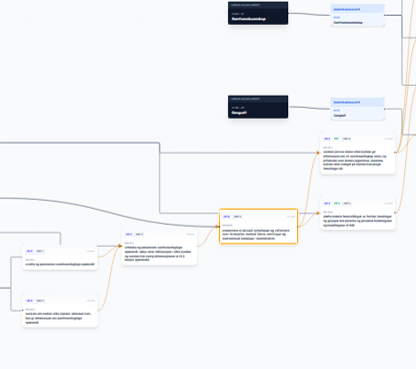

Grep Lærestier
Utforsk og lag "lærestier" som viser progresjonen mellom kompetansemål ved hjelp av `bygger-paa`-relasjonene i Grep. Dette er her visualisert som stier i et læringslandskap.
Åpne prosjektet